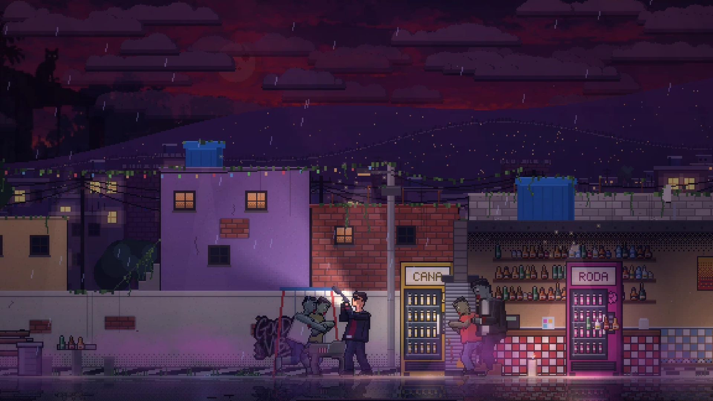
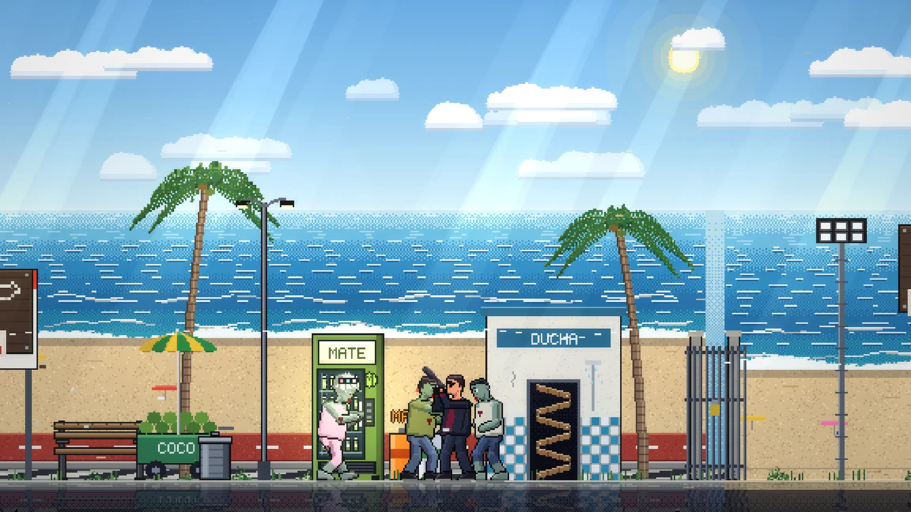
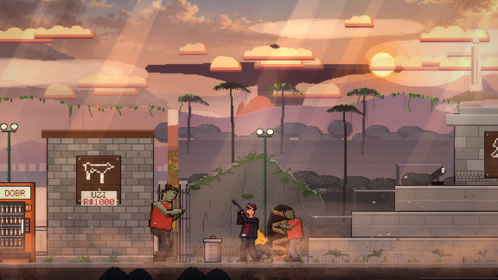
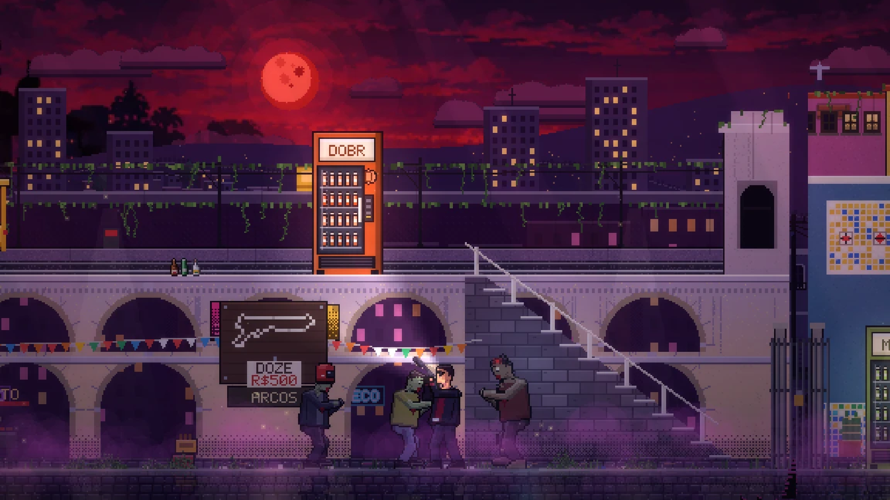
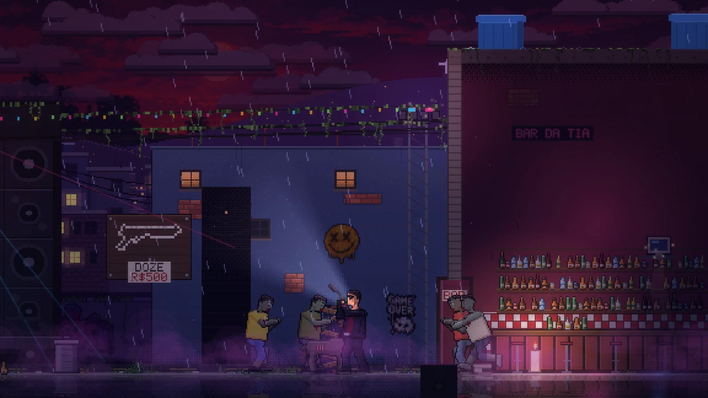
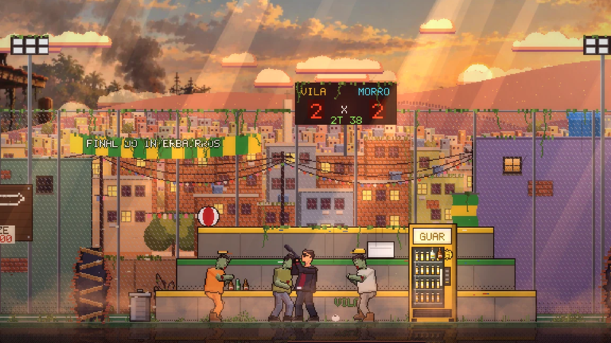

Tudo que você precisa para escrever, gravar ou divulgar o Quebrada Z. Pode usar as imagens desta página em matérias, vídeos e posts sobre o jogo, citando o nome Quebrada Z.
Quebrada Z é um jogo de sobrevivência por ondas contra zumbis nas quebradas do Rio de Janeiro, de graça no navegador do PC, do Android e do iOS.
A quebrada virou ponto de zumbi. O jogador segura a laje, prega tábua nas janelas, compra armas na parede e aguenta onda atrás de onda em sete mapas do Rio: favela, praça, Cristo Redentor, Copacabana, Lapa, baile e quadra. Os mapas têm dia, tarde e noite, chuva e tempestade de areia. Chefes como o Capitão Caveira e o Observador chegam com cena própria.
O personagem é montado com quase 200 roupas, ganhas no passe de temporada, nas missões semanais e em caixas grátis. A conta Google guarda o progresso no celular e no PC, e o ranking mostra os melhores de cada quebrada.
| Nome | Quebrada Z |
| Gênero | Ação, sobrevivência por ondas, pixel art 2D |
| Plataformas | Navegador no PC, Android e iOS (instalável como app). Play Store em breve. |
| Preço | Grátis. Passe premium e roupas opcionais com Z-Coin. |
| Idioma | Português do Brasil |
| Classificação | Não recomendado para menores de 16 anos (violência e sangue contra zumbis) |
| Onde jogar | quebradaz.github.io/game |
| Contato | amplitudelabb@gmail.com |

Favela à noite · 1920 × 1080
Copacabana de dia
Cristo à tarde
Lapa à noite
Baile à noite
Quadra à tardeGameplay completo (2 min 45 s, com som) · Luta contra o Capitão Caveira · Onda 18 em Copacabana
© 2026 Quebrada Z. Todos os direitos reservados. As imagens podem ser usadas para divulgar o jogo; o jogo em si não pode ser copiado nem hospedado em outro endereço.